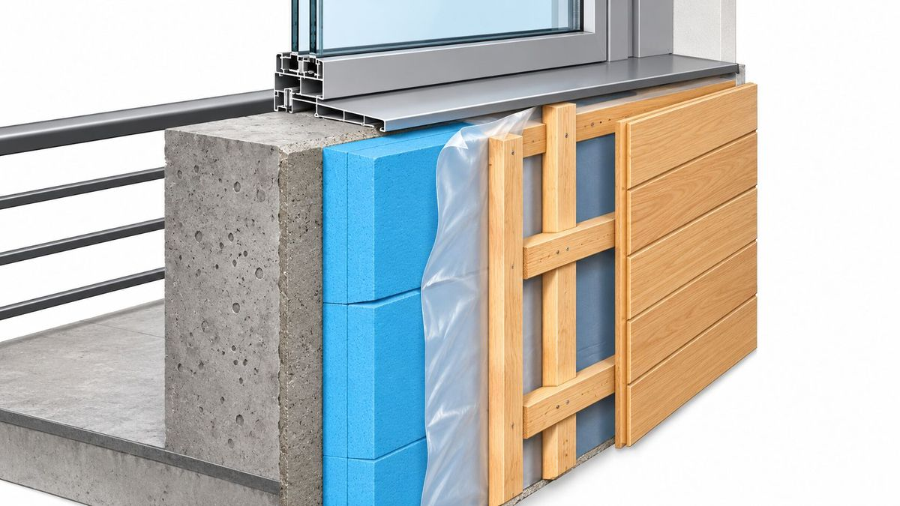

утепление балкона с холодным остеклением даёт +5–10 °C к температуре на балконе, но не превращает его в комнату. Работает только при сплошном контуре: XPS 50 мм по парапету и стенам, пароизоляция, герметизация примыканий. На 3–6 м² уходит 25 000–70 000 руб. Если нужны +20 °C зимой, дешевле заменить остекление на двухкамерное.
Что реально даёт утепление
| Показатель | Холодный балкон | После утепления |
|---|---|---|
| Температура при −15 °C на улице | −10…−12 °C | −2…+3 °C |
| Продувание | сильное, по щелям | нет при герметизации |
| Конденсат на рамах | обильный | меньше, но остаётся на стекле |
| Использование зимой | хранение | короткие выходы, сушка |
Одинарное стекло в алюминиевой раме имеет сопротивление теплопередаче около 0,35 м²·°C/Вт. Утеплённый парапет — 2,5–3,0. Слабое звено остаётся прежним: стекло и рама, поэтому температура растёт на 5–10 °C, а не на 20.
Когда имеет смысл, а когда нет
| Ситуация | Решение | Бюджет |
|---|---|---|
| Убрать продувание и сырость | утепление + герметизация | 25 000–45 000 руб. |
| Хранить вещи зимой без конденсата | утепление + вентиляция | 30 000–50 000 руб. |
| Сделать кабинет или спальню | замена остекления на двухкамерное | 90 000–250 000 руб. |
| Только «чтобы было теплее» | не делать: эффект 2–3 °C | — |
Если рамы алюминиевые без терморазрыва, утепление стен не спасёт: рама промерзает и «плачет» при любой температуре ниже −5 °C. В этом случае сначала меняют остекление, потом утепляют.
Материалы
| Материал | Толщина | Цена за м² | Особенность |
|---|---|---|---|
| XPS (экструдированный пенополистирол) | 50 мм | 450–700 руб. | не боится влаги, лучший выбор |
| Пенополиуретан напыляемый | 50–70 мм | 700–1 200 руб. | сплошной слой, нужна установка |
| Минеральная вата | 50–100 мм | 250–450 руб. | боится влаги, нужна пароизоляция |
| Пенопласт ПСБ-С | 50 мм | 250–400 руб. | дешевле, крошится, хуже по влаге |
Для балкона оптимален XPS 50 мм: при той же толщине он даёт на 20–25 % меньше теплопотерь, чем пенопласт, и не набирает воду при протечке.
Пирог парапета и стен

| Слой | Толщина | Функция |
|---|---|---|
| Клей-пена по периметру | 10–20 мм | крепление и выравнивание |
| XPS | 50 мм | теплоизоляция |
| Пароизоляция | 0,2 мм | защита от влаги изнутри |
| Обрешётка | 20–30 мм | вентзазор и крепление обшивки |
| Обшивка | 8–10 мм | отделка |
Пирог собирают снаружи внутрь: бетон → утеплитель → пароизоляция → вентзазор → обшивка. Пароизоляция ставится тёплой стороной, иначе влага конденсируется в утеплителе.
Мостики холода и примыкания
- Стык плиты и парапета — сплошной бетон, утеплять с напуском 100–150 мм.
- Откосы окон — XPS 20–30 мм, иначе рама промерзает по контуру.
- Металлические кронштейны и анкеры — через термопрокладку, иначе мостик холода.
- Стык с соседним балконом — пена и пароизоляция по всей высоте.
Один неутеплённый участок 0,3 м² сводит на нет 3 м² утеплённого парапета: холод идёт по бетону, и на этом месте появляется конденсат.
Вентиляция и конденсат
Герметичный балкон без притока воздуха — это парник: влага от сушки белья и растений оседает на холодном стекле. Нужны приточные клапаны в раме или стене (2–3 шт. по 5–10 м³/ч) и вытяжка. При площади 6 м² минимальный воздухообмен — 30 м³/ч.
Типовые ошибки своими руками
| Ошибка | Что происходит | Цена исправления |
|---|---|---|
| Утеплитель вплотную к обшивке | нет вентзазора, конденсат в панелях | демонтаж обшивки 8 000–18 000 руб. |
| Пенопласт без пароизоляции | влажный утеплитель, плесень в углах | замена 10 000–25 000 руб. |
| Утеплён только парапет | холод идёт через плиту и откосы | дополнительно 8 000–20 000 руб. |
| Запенить все щели наглухо | духота, конденсат на стекле | клапаны 3 000–8 000 руб. |
Самая дорогая ошибка — утепление без замены остекления с расчётом на тёплую комнату. Через сезон владелец получает конденсат, снимает обшивку и начинает заново, уже с новыми окнами. Общая переделка — 60 000–120 000 руб.
Порядок работ
- Очистить парапет и стены, заделать трещины, прогрунтовать.
- Приклеить XPS на клей-пену с напуском на стыки, запенить швы.
- Смонтировать обрешётку с шагом 400–600 мм, оставив вентзазор 20–30 мм.
- Уложить пароизоляцию с проклейкой швов, вывести на откосы.
- Обшить панелями, установить откосы и подоконник.
- Проверить примыкания и поставить приточные клапаны.
Смета 3–6 м²
| Позиция | На 6 м² | Стоимость |
|---|---|---|
| XPS 50 мм | 8–10 м² с напуском | 4 000–7 000 руб. |
| Клей-пена, пена монтажная | 3–4 баллона | 2 000–4 000 руб. |
| Пароизоляция | 10 м² | 1 000–2 500 руб. |
| Обрешётка | 20–25 м.п. | 2 500–5 000 руб. |
| Обшивка панелями | 10 м² | 6 000–15 000 руб. |
| Работа | 6 м² | 10 000–25 000 руб. |
Итого 25 500–58 500 руб. своими руками — 15 000–33 000 руб. за материалы. Замена остекления на двухкамерное — 90 000–250 000 руб., и только она даёт полноценные +15–20 °C.
Чек-лист перед началом
- Остекление с терморазрывом или планируется замена.
- Парапет и стены сухие, трещины заделаны.
- Утеплитель — XPS 50 мм, стыки запенены.
- Пароизоляция с проклейкой швов и выводом на откосы.
- Приток воздуха 30 м³/ч на 6 м² обеспечен.
Частые вопросы
Можно ли утеплить балкон с алюминиевыми рамами?
Можно, но эффект будет 3–5 °C: рама без терморазрыва промерзает. Полноценное утепление начинают с замены остекления.
Сколько стоит утепление балкона 6 м²?
Своими руками — 15 000–33 000 руб. за материалы, с работой — 25 500–58 500 руб. С заменой остекления — от 115 000 руб.
Нужна ли пароизоляция при XPS?
Да, со стороны помещения. XPS не пропускает пар, и без пароизоляции влага конденсируется на границе утеплителя и бетона.
Появится ли плесень после утепления?
Появится, если нет притока воздуха. Герметичный контур без вентиляции даёт конденсат на стекле и в углах через 1–2 сезона.
Можно ли вынести радиатор на балкон?
Только с разрешения и перерасчётом системы: вынос радиатора меняет гидравлику стояка. Без согласования — штраф и предписание вернуть всё обратно.
Что дешевле: утеплить или заменить остекление?
Утепление дешевле в 3–5 раз, но даёт +5–10 °C. Замена остекления даёт +15–20 °C и стоит 90 000–250 000 руб. на 6 м².
Сколько сохнет клей-пена под XPS?
Схватывание — 15–30 минут, полная полимеризация — 24 часа. Обрешётку крепят через 2–3 часа, обшивку — на следующий день.
Можно ли утеплять балкон зимой?
Можно при температуре не ниже −5 °C и только клей-пеной с зимней маркировкой. Монтажная пена ниже −10 °C не набирает прочность.
Источники
Материал подготовлен с опорой на следующие документы и данные:
Дисклеймер
Материалы журнала «Ремонт на примерах» носят информационный характер. Приведённые цены, сроки и нормативы являются ориентировочными: они зависят от региона, состояния объекта, уровня исполнителей и текущей рыночной ситуации, поэтому не могут служить точной сметой или гарантией результата. Перед началом работ проконсультируйтесь со специалистами и проверяйте актуальные требования нормативных документов. Редакция не несёт ответственности за решения, принятые на основании этих материалов.